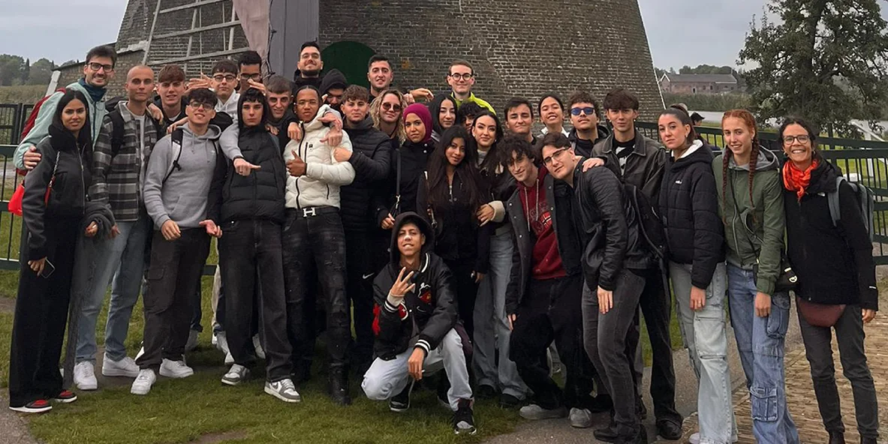

Definire cosa misurare
Leggere le performance rispetto agli obiettivi e ai KPI della campagna.
Digital Marketing & Data Specialist
Scarica CV ↗ expand_moreSelected work
Tre progetti per conoscere il mio lavoro: dall’editoria sportiva alla comunicazione di un club, fino al web design.

Un progetto editoriale costruito da zero: brand identity, sito e community.
Esplora il progetto ↗
Comunicazione del club, contenuti match-day e copertura fotografica.
Esplora il progetto ↗Un sito istituzionale e portfolio per uno studio creativo.
Esplora il progetto ↗Strategy & Data
Durante lo stage come Campaign Manager in Agenzia YES ho supportato pianificazione, monitoraggio e reportistica di campagne Google Ads e Meta Ads.
Leggere le performance rispetto agli obiettivi e ai KPI della campagna.
Monitoraggio dei dati di performance e preparazione della reportistica per il team.
Analisi a supporto dell’ottimizzazione delle campagne e delle strategie dei clienti.
Strategie basate sui dati, narrazioni che ispirano e una visione imprenditoriale orientata alla crescita.
WRDigital
Gestione strategica dei canali social, creazione di contenuti creativi e monitoraggio dei KPI per massimizzare la crescita organica e l'engagement dei brand.
Agenzia YES S.P.A. | Varedo, MB
Ho supportato il team nella pianificazione, esecuzione e monitoraggio di campagne advertising multicanale (Google Ads, Meta Ads). Analisi dei dati di performance e reportistica avanzata per ottimizzare le strategie e raggiungere i KPI dei clienti.
Ho ideato e lanciato il progetto editoriale definendo da zero la brand identity, la linea editoriale e la strategia di crescita digitale. Gestisco l'intero ecosistema: dalla creazione di contenuti SEO-oriented per il sito (WordPress) alla pianificazione e gestione della community sui canali social.
ASD Real Meda CF | Meda, MB
Ho gestito la strategia social, aumentando l'engagement e la crescita della community. Ho ideato e creato contenuti grafici per campagne digitali, curato le relazioni con i media e realizzato la copertura fotografica degli eventi.
Lfootball | San Mauro Torinese, TO
Ho redatto articoli e approfondimenti sul calcio femminile, affinando le tecniche di scrittura SEO-oriented e di storytelling sportivo per catturare e fidelizzare il pubblico.
Per Sempre Calcio
Prima esperienza nel giornalismo sportivo, dove ho sviluppato capacità di ricerca delle fonti e scrittura di articoli nel rispetto delle scadenze editoriali.
Group Sport Management | Online
Ho definito l'identità grafica e la linea editoriale per i profili social di atleti, costruendo la loro immagine digitale e gestendo la comunicazione diretta con la fan base.
Tecnico Superiore Marketing (Data Specialist) | Milano | 2023 – 2025
Un percorso intensivo focalizzato sull'applicazione pratica di SEO, data analysis, marketing automation e content strategy per lo sviluppo del business.
Hogeschool Rotterdam | Rotterdam, NL | Settembre 2024
Ho collaborato con studenti della Hogeschool Academy per sviluppare soluzioni di marketing innovative e approfondito le strategie operative di agenzie leader del settore come Dept.
IIS Majorana (2022-23) & Istituto Brianteo (2018-22)
Solida base tecnica in programmazione, gestione di database e infrastrutture di rete, competenze fondamentali per comprendere a fondo il mondo digitale.

Collaborazione internazionale con la Hogeschool Rotterdam. Un'immersione nelle dinamiche delle agenzie globali, sviluppando strategie di marketing innovative e affrontando brief reali per brand di respiro mondiale.
Agency Insights
Collaboration